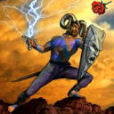

Forums galactiques > Taverne galactique : lieu de discussion informel > Quel Statut pour les planètes révoltées
elles sont libres ==> à tout le monde | 24 | |
48H après la révolte elles sont à tout le monde | 16 | |
elles restent toujours la propriété de leur premier colon | 11 | |
Autres à préciser | 0 | |
Total : 51 vote(s) | ||
Pages : 1
| Orlanth Réputation à la taverne : 5  20/05 ETU 06:37 | Score : 0 Détails Bonjour à tous,
Les révoltes sont un facteur inhérent de cette galaxie, quelle est votre position sur le statut de VOS planètes révoltées? | ||
| Xemnas Réputation à la taverne : 24  20/05 ETU 08:17 | Score : 0 Détails a tout le monde, c'est notre faute si elles se sont revoltees, alors elles ont l'inbdependance et n'apartiennent a personne
| ||
| Santa Claus Réputation à la taverne : 268  20/05 ETU 14:50 | Score : 0 Détails En ces débuts de colonisation, parfois difficile, j'aurais tendance à penser que les planètes révoltées sont libres, libres non pas à tous le monde, mais libre aux commandants natifs du système.
Pourquoi ? Tout simplement parce que la construction de la galaxie est un travail coopératif, qui se fera tous ensemble. Si vous n'êtes pas capable de maintenir l'ordre sur toutes vos planètes, ne soyez pas égoïste au point de les abandonner. Non, donnez une chance à vos voisins, offrez leur. Oui, je dis que ces planètes sont libres pour tout le monde pour leur redonner leur chance (aux planètes et ses habitants) d'être dirigées pas un commandant digne de s'en occuper. En effet que ce phénomène de révolte que la stupidité des commandants expansionniste et égoïste permet, ne devrait exister. Et qu’avez-vous à gagner par un don à votre voisin ? Tout simplement la bonne entente entre voisin, une bonne entente qui fera que me moment venu vous serez capable, ensemble de protéger votre système. Cette bonne entente vous épargnera surement quelques conflits couteux par l’avenir. Faites bien votre calcul, économiquement vous serez gagnant également. Que ceux qui possèdent un Guildéen dans leur système fermé en profite également. Qu’ils en profitent car en le soutenant à ces début en échange une coopération (échange via la contrebande), vous accélérerez la croissance, la richesse, la puissance de tout votre système. | ||
| Lord Oblivion2 Réputation à la taverne : 8  20/05 ETU 15:22 | Score : 0 Détails En tant que fédéré et colonisateur aguéri, voici ce que je pense:
Une planête révoltée est une planête en autarcie et en indépendance, elle sont donc libres a tout commandant qui souhaiterai la prendre et les histoires de "oui mais c'était la mienne avant" ne marchent pas, parce que avant, c'est avant et que ce qui nous importe a tous, c'est le présent. Cependant, si la planête est contestée entre plusieurs commandant, des arrangements peuvent être trouvés, et je ne pense pas qu'il vaut la peine de se taper dessus pour des histoires de planêtes, alors que la voie diplomatique est préférable, après tout, qu'est-ce qui vaut une bonne disussion amicale entre commandants assis autour d'une table? Et puis une planête, surtout polaire avec 100 habitants et un gisement de minéraux/diamants, sûrtout quand on en a beaucoup, ce n'est qu'un petit rien du tout. Donc commandants, je vous prie de parler entre vous et de ne pas écouter les théories débiles d'ancienne appartenance à qui que ce soit. Chers amis, merci de m'avoir écouté. L.o. démocrate ASSUME | ||
| Xemnas Réputation à la taverne : 24 20/05 ETU 16:21 | Score : 0 Détails +1 Lord Oblivion
Il est vrai, ca serait trop bete je trouve de se bagarrer pour quelques planetes, et puis, elle vous servent a rien, pourquelle raison? Elles s'insurgent avant que vous ne recevez vos productions... Donc en consequant n'onbt aucun utilite. De plus, quand vous avez un taux d'insurrection eleve, c'est simple : On contacte son ami en lui demandant de garder les planetres un certain moment, comme cela il est content, car il possede quelques planetes, et vous parce qu'elles ne s'insurgent pas. Xemnas | ||
| RaptorTeak Réputation à la taverne : 2 20/05 ETU 18:56 | Score : 0 Détails Une planète qui se rebelle ne respecte plus son colomb. Le fait de la recoloniser ne ferait qu'endurer peine à ce peuple. C'est pourquoi il faut les laisser à tout colomb plus aguerri, et qui ravira le peuple de cette planète.
[HRP] Autrement dit : pas de pitiééé :p [/HRP] | ||
| Yanluowang Réputation à la taverne : 0 21/05 ETU 09:30 | Score : 0 Détails Salutation commandants,
Depuis sa création je trouve le système d'insurrection déplorable, c'est une perte de temps. Vous savez très bien que dans une semaine (lorsque vous disposerez d'une centaine de vaisseaux autour de chaque planète) les planètes perdu, vous irez les rechercher en 24h et quelques minutes (le temps de l'attaque et le temps de réaction de vos pertes) après votre compte rendu, donc les commandants proches sont obligé d'arrivé après vous et donc les planètes vous appartiendront toujours. Je ne sais pas si j'ai été très claire si NON veuillez me l'indiquer | ||
| Seigneur Grimaldus Réputation à la taverne : 806  21/05 ETU 09:31 | Score : 0 Détails Premier arrivé,premier servis.
Vous la perdez et la récupérez en premier,tant mieux. Sinon,tant pis. Mais la diplomatie peut régler ce genre de probleme.. | ||
| revan Réputation à la taverne : 25  21/05 ETU 11:07 | Score : 0 Détails Pour moi, je pense que les planetes revoltées devraient etre libre pour tout le monde.
Si les proprietaires ne peuvent pas les garder c'est leurs problemes, à eux apres de tenter de s'arranger avec celui qui la reprise. Revan. | ||
| Silence Réputation à la taverne : 266  21/05 ETU 11:09 | Score : 0 Détails Incontestablement, les commandants ont toute légitimité sur leur système d'origine ; les planètes révoltées comprises dans ces systèmes ne sauraient donc leur être revendiquées par des éléments extérieurs. En revanche, si plusieurs commandants évoluent au sein du même système, la contestation semble possible, auquel cas il serait avisé de choisir la solution diplomatique...
| ||
| Lord Necron Réputation à la taverne : 0  21/05 ETU 23:50 | Score : 0 Détails Pfff arretez de vous prendre la tête pour des sottises, "quel statut pour les planètes révoltées?" ce sont des planètes vierges voilà tout!
| ||
| Tiz Réputation à la taverne : 165  22/05 ETU 07:27  | Score : 0 Détails Un conseil, neocron, arrête un peu de faire ton rebelle et de remettre en questions ce que beaucoup de gens on fait derrière toi (je parle aussi pour le FOU).
Si on discute de ce genre de politique et que tu es pas content, tu as "le droit" de t'en aller de la salle. merci. | ||
| Orlanth Réputation à la taverne : 5 23/05 ETU 17:49 | Score : 0 Détails Ma position est que je la considère comme mienne pendant les 48H qui suivent la révolte. Si mes services de sécurité n'arrivent pas à rétablir le contrôle dans ce laps de temps, Alors, les populations de cette planète auront le droit à leur indépendance ou à se mettre sous la protection d'autrui.
L'univers est vaste et il y a de place pour tout le monde! Pourquoi aller chercher dans "l'assiette du voisin" et risquer un conflit. | ||
| Céthro Réputation à la taverne : 220  27/05 ETU 10:27 | Score : 0 Détails Meuuuuh non, les gars! C'est pas si compliqué! Les planetes révoltées sont à moi ;] Ah-la-la, sont boulets des fois, j'te jure (uk-uk-uk-uk)
| ||
| Dark Dead Réputation à la taverne : 27  15/12 ETU 22:32 | Score : 0 Détails on fait comment pour voir ca ??
| ||
| Vlavv Réputation à la taverne : 155  15/12 ETU 22:36 | Score : 2 Détails Pour voir quoi...?
| ||
| Dark Dead Réputation à la taverne : 27 15/12 ETU 22:39 | Score : 0 Détails pour voir le statut de la planete!!
| ||
| Vlavv Réputation à la taverne : 155 15/12 ETU 22:48 | Score : 0 Détails HRP : tu passes ton curseur sur une planète dans l'onglet Géostratégie.
S'il y a un nom de commandant qui s'affiche en dessous du nom de la planète, c'est qu'elle est occupée. Sinon, elle est soit libre, soit rebellée. | ||
| Dark Dead Réputation à la taverne : 27 15/12 ETU 22:54 | Score : 0 Détails ah d'accord...vous passez a laz taverne des passants??lol
| ||
| Unknow Réputation à la taverne : 225  16/12 ETU 00:16 | Score : 0 Détails Excusez moi mais vous avez oublier de dire quelque chose comme "Merci"!!!!
Ce Commandant vous répond (malgrer le HRP dont vous faites preuve) et vous ne le remerciez pas... |
Pages : 1
Forums galactiques > Taverne galactique : lieu de discussion informel > Quel Statut pour les planètes révoltées